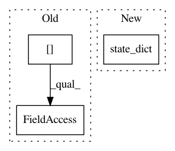

7b27ce2b236e29d82e33c5e07645f845d433973c,python/ray/util/sgd/torch/torch_trainer.py,TorchTrainer,save,#TorchTrainer#Any#,520
Before Change
Returns:
checkpoint (str): Path to target checkpoint file.
state = ray.get(self.workers[0].get_state.remote())
torch.save(state, checkpoint)
return checkpoint
After Change
Returns:
checkpoint (str): Path to target checkpoint file.
torch.save(self.state_dict(), checkpoint)
return checkpoint
def restore(self, checkpoint):
In pattern: SUPERPATTERN
Frequency: 3
Non-data size: 3
Instances
Project Name: ray-project/ray
Commit Name: 7b27ce2b236e29d82e33c5e07645f845d433973c
Time: 2020-03-27
Author: maximsmol@gmail.com
File Name: python/ray/util/sgd/torch/torch_trainer.py
Class Name: TorchTrainer
Method Name: save
Project Name: OpenMined/PySyft
Commit Name: 59d4bbaaf06850e2dfb357855f50b05f6c9aadb1
Time: 2020-10-02
Author: skywind29@users.noreply.github.com
File Name: syft/frameworks/torch/fl/utils.py
Class Name:
Method Name: scale_model
Project Name: OpenMined/PySyft
Commit Name: 59d4bbaaf06850e2dfb357855f50b05f6c9aadb1
Time: 2020-10-02
Author: skywind29@users.noreply.github.com
File Name: syft/frameworks/torch/fl/utils.py
Class Name:
Method Name: add_model